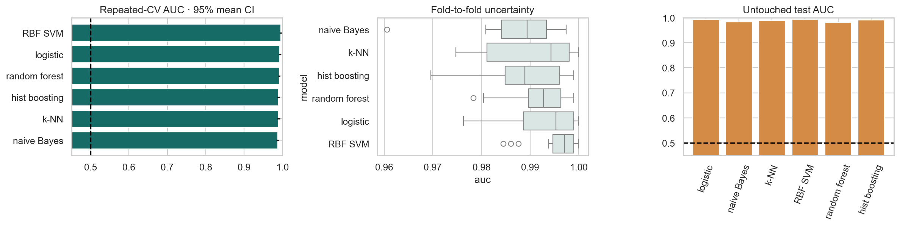

ML Hands-on Lab · 10 — Practice and diagnosis
Model comparison capstone
1. The decision and the mechanism
Choose a model family by comparing it with alternatives on the same development splits. The question is whether its advantage survives changes in the sample, not whether it tops one attractive leaderboard.
This lesson includes the mechanism, a hand-worked example, and the experiment design. The paired notebook contains the complete runnable setup and produces the diagnostic figure below.
2. Work a small example
Six families are compared here: logistic regression, Gaussian naive Bayes, k-nearest neighbours, an RBF SVM, a random forest, and histogram gradient boosting. Their assumptions differ, so preprocessing is part of the estimator being evaluated. Scaling belongs in the linear, distance, and kernel pipelines; tree thresholds do not require it.
Read a lead in context
Five fold AUCs [0.91, 0.95, 0.93, 0.89, 0.94] average to 0.924. A competitor averaging 0.928 leads by only 0.004. If their paired differences are [0.03, −0.02, 0.01, −0.01, 0.01], the winner changes by fold. Compute and inspect those paired differences before treating the small mean gap as a durable advantage.
3. The mathematics, with meanings
\[\bar s_m=K^{-1}\sum_{k=1}^{K}s_{mk},\qquad d_k=s_{Ak}-s_{Bk}\]
smk is family m’s score on split k. The mean summarizes performance across the chosen resamples. Paired difference dk compares two models on exactly the same rows, reducing confusion from an unusually easy or hard split.
\[\mathrm{SE}_{naive}=\mathrm{SD}(s_1,\ldots,s_K)/\sqrt K\]
This familiar standard-error formula assumes independent observations. Repeated CV folds overlap in both training and test examples, so their scores are correlated. The notebook’s 1.96 × SE bars are descriptive, heuristic intervals; their label does not establish 95% statistical coverage. Report fold spread and paired differences, and use a method that accounts for dependence if you need formal inference.
4. Follow the actual experiment
- Lock a stratified 20% final test set before comparing families. Use the remaining development rows for every choice.
- Create five stratified folds and repeat the partition four times: 20 evaluations per family. Reuse the same splitter seed and rows for each estimator.
- Evaluate ROC AUC and balanced accuracy. AUC measures ranking; balanced accuracy averages sensitivity across the two classes at the estimator’s decision threshold.
- Sort families by development mean AUC, while inspecting paired fold performance and practical cost. Fit the selected family on all development rows.
- Read the selected family’s final-test AUC once. The notebook also computes other families’ test scores for comparison; do not switch winners or tune from that display and still call the test untouched.
5. Controls worth changing
| Control | What changing it does | What to inspect |
|---|---|---|
| Number of folds: 5 | Each fold trades training-set size against evaluation-set size. | Minority-class counts must remain sufficient in every fold. |
| Repeats: 4 | More partitions show sensitivity to split luck; they do not create independent new patients. | Spread, paired differences, and frequency of each family winning. |
| Family settings | These are fixed baseline configurations, not equally optimized contenders. | A losing baseline does not prove the entire model family is inferior. |
| Selection metric | AUC selects ranking quality; other objectives may choose differently. | Operational threshold, calibration, latency, and interpretation requirements. |
6. Read the result and its limits
The development panel summarizes average AUC and descriptive bars; treat the plotted “95% mean CI” label with the dependence caveat above. The final-test panel is a single audit of the procedure. The fold-winner panel asks how stable the ranking is across 20 resamples. If several families win often and mean gaps are small, a simpler or cheaper family may be the sensible choice.

Balanced accuracy 0.5 and ROC AUC 0.5 are useful no-skill reference levels here. Neither metric proves deployment value, and this benchmark is not a clinical validation. Near-duplicate subjects, later measurements, or a different hospital can invalidate a random split even when the CV implementation is correct.
7. Code that exposes the mechanism
This is the paired-fold logic used in the notebook, formatted for readability. models contains the six named estimators and their pipelines; X_dev is the locked development partition.
rows = []
for name, model in models.items():
scores = cross_validate(
model, X_dev, y_dev, cv=cv,
scoring={"auc": "roc_auc", "balanced": "balanced_accuracy"},
n_jobs=1,
)
for fold, auc in enumerate(scores["test_auc"]):
rows.append({"model": name, "fold": fold, "auc": auc})
results = pd.DataFrame(rows)
paired = results.pivot(index="fold", columns="model", values="auc")
mean_auc = paired.mean().sort_values(ascending=False)
winner = mean_auc.index[0] # choose from development only
selected = models[winner].fit(X_dev, y_dev)
print("Selected:", winner)
print("Final test AUC:", roc_auc_score(
y_test, selected.predict_proba(X_test)[:, 1]
))The paired table is also the correct object for subtracting one family’s fold scores from another’s. Treat the added pairing display as a reading aid, not another independent experiment.
8. Break an assumption
The notebook counts which family wins each resample and displays the best single-fold score for each. Selecting the highest of those isolated scores would select favorable sampling noise as well as model quality. A family that occasionally posts an exceptional score can be less reliable than one with a slightly lower but stable average.
- Compare mean AUC with the best single-fold AUC. Explain why the latter is systematically optimistic as a selection rule.
- Inspect paired differences for the top two families. Are most differences positive, or is the average driven by a few folds?
- Choose a cost-sensitive metric before repeating the experiment. Changing the metric after inspecting test results is another selection step.
9. When to use it and what comes next
Use this workflow for a small-data baseline tournament and for deciding whether added model complexity is worthwhile. If families have already been heavily tuned on these development splits, nested CV is the next step. A final independent temporal or grouped test is more valuable than endlessly resampling a dataset whose rows are not truly independent.